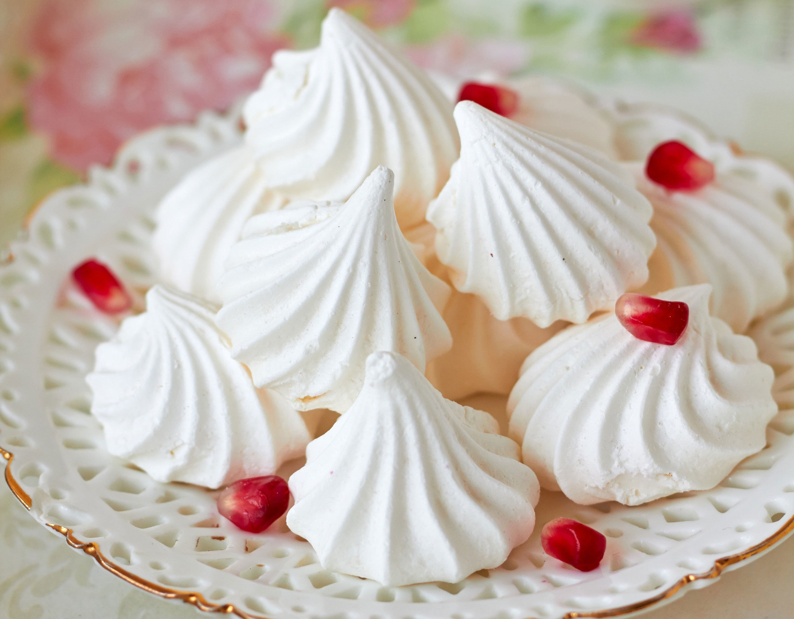

А вы знаете как приготовить самые вкусне безешки?Сейчас я вам поведаю.

Нам понадобится:
- лимоная сок 1 чайная ложка
- яичные белки 4 шт
- сахар 150 гр
- Белки взбиваем до мягкой,стойкой пены
- Небольшими порциями добавляем сахар,должна получиться стойкая и блестящая пена
- Если вдруг что то получиться не так,как сказано выше,ещё взбейте массу
- Чтобы белковую массу сделать более стойкой,добавляем лимонного сока
- Взбиваем всё ещё 2 минуты
- Белковую массу выкладываем в кондитерский мешок,зетем на противень
- Выпекаем при температуре 120 C
- Примерно 2 часа
- Они готовы!